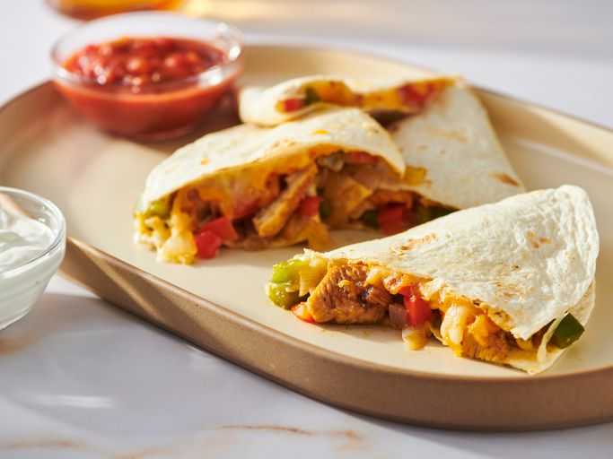

Quesadilla

Description
A Mexican classic that'll keep you coming for more!
Ingredients
- 1 pound of skinless, boneless chicken breast
- fajita seasoning
- 1 tablespoon vegetable oil
- 2 green bell peppers chopped
- 2 red bell peppers
- 1 onion
- 10 flour tortillas
- mexican four cheese
Steps
- Dice the peppers, onions, and chicken separately
- Lightly grease a baking sheet and preheat a broiler
- Mix the chicken with fajita seasoning then place it on a baking sheet
- Place the chicken under the broiler and cook the chicken for around 5 minutes
- Preheat the oven to 350 degrees fahrenheit
- Heat oil in a large saucepan over a medium heat and toss in and stir the bell peppers,
onion, and broiled chicken for around 10 minutes.
-
Place the contents of the broiler into half a side of the tortilla and
place the mexican cheese on top of the vegetable and chicken pieces.
- Close the tortilla over the contents and place the quesadilla onto the baking sheet
- Bake the quesadillas in the preheated oven for around 10 minutes
- Cut the quesadillas into slices and serve
Go Back To Recipe Site
Click here